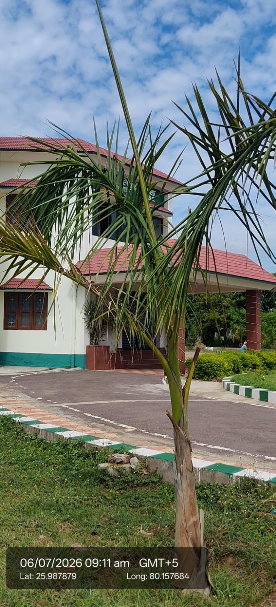

| Scientific name | Roystonea regia |
|---|---|
| Family | Arecaceae |
| Category | Trees |
Habitat & Growing Conditions
- Native to Cuba, Florida, and Caribbean. Widely planted as ornamental in India
- Very common in UP including Kanpur area in your coordinates. Planted in parks, institutional campuses, avenues, and gardens like in your photo
- Thrives in tropical to subtropical climate. Needs full sun
- Prefers deep, fertile, well-drained soil with regular moisture. Grows well in urban areas
- Tall, single-stemmed palm, 15-25 m tall when mature. Has a smooth, greyish-white trunk with a distinctive green crownshaft at the top. Leaves are large, feathery/pinnate like in your photo
Ecological & Economic Importance
- Ornamental: Most popular avenue and landscape palm in India. Used for beautification of roads, campuses, hotels, and government buildings because of its majestic look
- Other uses: Trunk wood used for posts and construction in native areas. Leaves used for thatching. Fruits eaten by birds
- Ecological: Provides shade and adds aesthetic value to urban landscapes. No major food or medicinal use
- Cultural: Considered a symbol of elegance and is often planted at entrances of institutions and offices